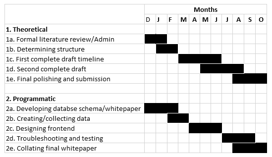

Rough Timeline/Gantt Chart

Potential tools used:
- Python (scraping)
- C# (frontend development/databasing)
- LiteDB (databasing)
- Endnote, for referencing
Data Management Plan
The Dataset
To circumnavigate some complications at this stage, the data will constitute a ‘dummy’ dataset. The way I will do this is to set up my own instances on forum software (as there are several legacy and modern platforms still in use), populate them with dummy data, and demonstrate the scraping program and database schema using that data. As the data itself is incidental, and establishing my own forum instances give me unique insight into the way the data is constructed and stored, this seems like a sensible choice.
Data Standards
Data collection will likely be scraped into the database itself, but outside of this the forms used by the data are likely to be raw .html or HTML content converted to raw text (.txt) files. Preservation of some .css files for website appearance structure recreation may also be an option. As for the database schema I would prefer a lightweight, non-server-requiring format like LiteDB. Its syntax is compatible with existing SQL-style database modes for interoperability purposes, and its FOSS specification suits the project.
Metadata
Metadata scraped from forum software will likely include most of the following:- Poster username and ID
- Date posted
- Post content
- Relevant URLs
- Subforum/thread/post location (URL structure)
- Location (if recorded on profile)
Automated:
- Date accessed
- Type of forum software
Manual:
- Type of material
- Topic keywords/tags
Access to Data/Data Security
According to the RDMP(18(a)), the data:
must be deposited in a discipline-specific, general-purpose, or Macquarie University research data repository, or in national or international collections, as per good practice in the discipline and in accordance with any publisher or funder requirements. Dataset-level metadata should be deposited in the Macquarie University Research Data Repository if data is published elsewhere (including a link to the data);
The likely candidate for offsite data repository (as outlined by the University’s list of approved data platforms) will be the Australian Data Archive.
In accordance with the RDSSS, the dummy data would be classed as ‘general’ (normal, non-high-risk or sensitive data) in terms of the University’s classifications, and a potential real dataset will likely fall under the ‘publicly available data’ provision, also under the ‘general’ classification. The CC4.0 license is more than adequate for the data.
In terms of data security, the project will implement the following procedures:
- Strong password on devices (crosschecked with resources to ensure no compromised passwords)
- Encryption on devices holding and harbouring the data
- Automated backups to both cloud service (more often) and encrypted physical storage medium (less often)
Ownership and Licensing
As a dummy/demonstrative dataset, generally there is nothing to distribute that others could use in any practical way – though the dataset may be packaged with any future software made by the project to serve for further demonstrative purposes. Because the data is made by the project, and thus Macquarie as the IP holder of the project (in accordance with the IPP), would continue to have ownership of that, but there’s no inherent value in the data itself outside of its demonstrative use.
In terms of commercialization of the programmatic aspect of the project, I would like to be able to adhere to the principle that nothing in the project is to be used for commercial purposes, but this is subject to a waiver by the University on the basis of it being a low-value output. The overall code license for the project would likely have to come after the conclusion/marking of the thesis, depending on the University’s policies and procedures.
If in the future of the project post-thesis submission I decide to use a real scraped dataset from real user posts, I would generally have no ownership over that data – it’s a publicly derived resource, I have only arranged it in a particular way. If anything it belongs to the server owner or the poster (though this is not exactly defined legally), but in the case of abandoned forums it’s impossible to ask for permission. Depending on the location in which the data is pulled from, in this instance, it may be liable to takedown requests from posters from nations where the GDPR is active. (These problems should indicate why I have chosen a dummy dataset, but in any case data would be screen for any potentially identifying information)
Project Archival/Preservation
In terms of the data, see the Access to Data section. Development documentation and other miscellaneous development files will likely be stored in the same place, or another repository as outlined by the University and the project’s specific faculty department.
If available, I will make specific archival materials for future preservation as the policies and procedures allow.